背景實驗紀錄
2026-11-06 下午，EP1 黃昏森林（S00 開場追逐）為主。五種效果，每個試過的做法都列出來，包括失敗的。點圖可以放大。
總表
| 效果 | 結果 | 以後怎麼做 |
|---|---|---|
| 一、前後格背景接得起來 | 成功 | 每格多附同一個地點的空景 |
| 二、做空景 | 成功 | 先畫量尺版（角色站直入鏡）量好比例，再用編輯畫面拿掉角色 |
| 三、同一張空景做出不同景別 | 還沒成功 | 下一步：照量尺版的角色大小算出要裁多少 |
| 四、換方向看同一個地點 | 成功 | 附空景＋連戲清單（哪個地標在畫面哪裡） |
| 五、鏡頭往後退 | 成功 | 深度圖逐點縮放＋編輯畫面只補灰色，點名補上新東西 |
一、前後格背景接得起來
原本每格各畫各的，同一個地點每格的森林都長得不一樣。
做法 1：編輯畫面打開這一格，附上一格當參考，只換背景 有條件成功
在 Flow 打開這格的圖（編輯畫面），＋ 附上一格（先改名成 EXP Sxx 才搜得到），寫「人物、構圖、大小都不變，只把背景換成附圖的地點」。程式 exp_bg.py。
S03-3 成功：人物沒動，背景換成 S03-2 的空地。S00-2 失敗：上一格 S00-1 也是 HERO 被暴龍追，Flow 搞混，把整張畫成 S00-1 的構圖。上下兩格角色相同、動作相近就會失敗。另外編輯會變成原圖的新版本，只能編輯已經定案的圖。
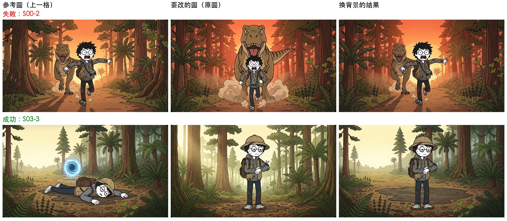
每列：參考的上一格 → 原圖 → 換完背景。第一列 S00-2 失敗、第二列 S03-3 成功。
做法 2：每格多附同一張空景 成功
原 prompt 不動，多附這個地點的空景（BGDUSK），在 Setting 前加一句「背景是空景裡的同一個地方，照這格自己的鏡頭畫」。程式 plate_shots.py。
黃昏森林 7 格背景明顯一致：同一片森林、同一條路、夕陽在同一個位置。構圖沒有被空景帶走。顏色會跟著空景變暗。但它把整張空景原樣搬進每一格，這是效果三的問題。

最上：空景 BGDUSK。下面三列：S00-1、S00-2、S00-3 附空景後各兩張，背景幾乎一模一樣。
二、做空景（沒有角色的背景）
每個地點一張，之後每一格都拿它當背景參考。正式流程裡空景是第一步，那時還沒有任何分鏡圖。
做法 1：地形照地圖檔寫，附道具設定圖對畫風 成功
地形、物件只照 maps/*.json 的描述寫，附 REF_PROPS（只對畫風、不畫裡面的東西），實驗室附 REF_LAB；寫明沒有任何人和恐龍。每個地點 4 張。程式 plates.py。
9 個地點都畫出來，都沒有角色。問題：空景裡沒有人，看不出角色該多大。
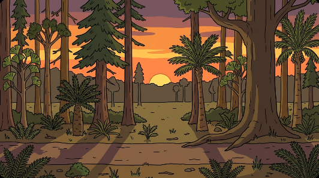
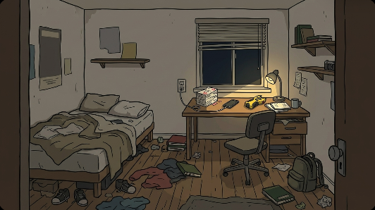

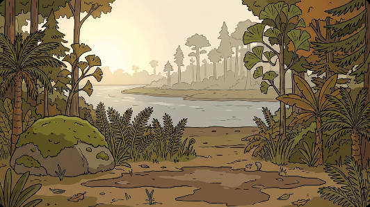
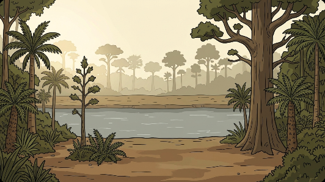

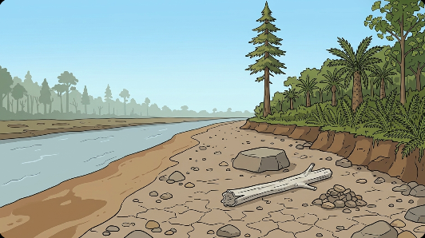
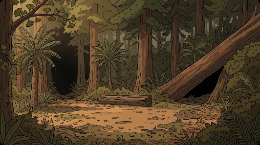

做法 2：量尺版——先畫角色站直入鏡，量好比例再拿掉 成功
同樣的地形 prompt，加上 HERO（10 m）和 TEEN（18 m）站直、全身入鏡、不互相遮。量兩者的高度，跟「比例圖 ÷ 遠近比」對照，挑最準的一張；再在編輯畫面「只拿掉角色和影子」。程式 scale_plate.py、remove_chars.py，數字存 plates/dusk_scale.json。
| 組 | 鏡頭 | HERO 占畫面高 | TEEN÷HERO 量到／應該 | 結果 |
|---|---|---|---|---|
| A | 廣角＋遠景，架高 3 m | 48% | 0.99／0.93（差 6%） | 選用 |
| B | 寫「15 m 高」想做大遠景 | 17% | 1.10／1.22 | 沒變成大遠景，還是平視 |
| C | 寫「高空俯視、樹冠在鏡頭下方」 | 11% | 1.31／1.44（差 9%） | 真的大遠景 |

量尺版 A（上）、B（下）各 4 張。A3 的 TEEN 小了 29%、B3/B4 也不準，沒選。
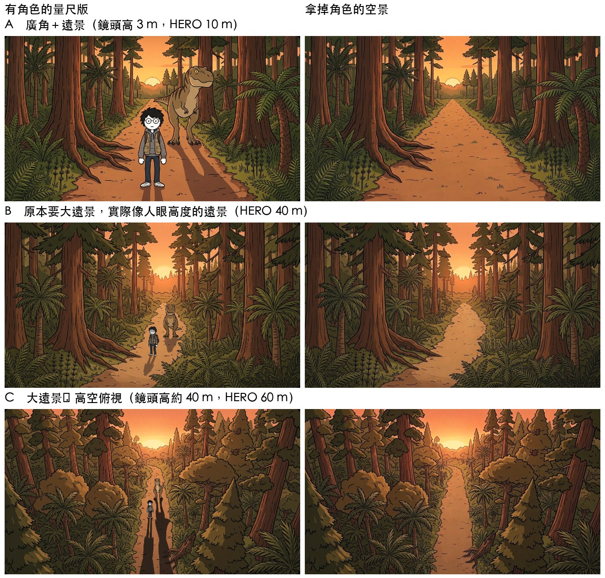
左：量尺版；右：拿掉角色的空景。拿掉後，原本被角色擋住的那段小路被重畫成別的形狀（A 從彎路變直路）。
三、同一張空景做出不同景別
空景是遠景，比較近的格子（全景、中景）應該只看到空景的一部分。
做法 1：直接附整張空景 失敗
Flow 把整張空景原樣搬進每一格，S00-1（遠景）、S00-2（全景・恐龍出框）、S00-3（全景）的背景範圍一模一樣。S00-1 也沒辦法比空景更遠。（圖見效果一做法 2）
做法 2：從空景裁 60% 上傳，附給那一格 失敗
1K 空景，貼底邊裁 60%（保留腳下的小路），放大回原尺寸，上傳成 BG_S00-2.jpg，附給 S00-2、S00-3。程式 crop_shots.py。
背景真的變近了（樹根變大、夕陽在上方），但裁太多：背景被放大 1.67 倍，角色還是照原本的大小畫，跟背景一比，恐龍和 HERO 都顯得變小。

紅框＝裁的範圍（寬高各 60%）。
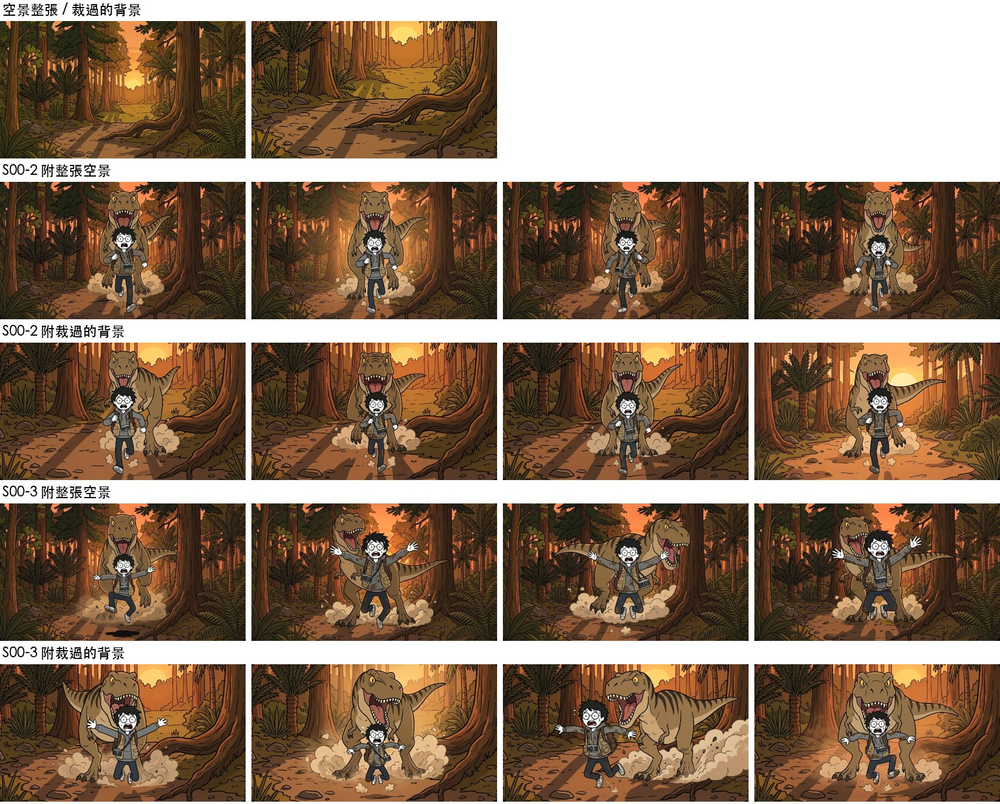
每格兩排：上＝附整張空景，下＝附裁過的背景。
下一步（還沒試）：照量尺版算要裁多少
例：量尺版裡 HERO 站在那個位置高約畫面 48%，全景要他占約 75%，就從他站的位置裁 0.48 ÷ 0.75 ≈ 64%。恐龍照比例圖跟著算。
四、換方向看同一個地點（轉 90° 看恐龍側面）
站在 TEEN 左邊看牠的側面，背景是牠右手邊（空景左側）那片森林，看樹的位置能不能對得上。
五種 prompt 寫法
| 寫法 | 結果 | 說明 |
|---|---|---|
| 1 地標清單：空景左側從近到遠，換成新畫面從左到右 | 成功 | 大樹在恐龍背後、夕陽在右 |
| 2 極簡：只說「轉 90°」 | 失敗 | 沒轉，照抄原本視角，夕陽在正中間 |
| 3 地圖座標：用公尺寫每棵樹、鏡頭位置和方向 | 成功 | 3～4 張對 |
| 4 只用參考圖左半邊 | 一半 | 4 張裡一半沒轉過去 |
| 5 電影換機位＋連戲清單 | 最穩 | 4 張全對 |
程式 side_view.py，prompt 存在 plates/side_v1～5_prompt.txt。
只有點名的地標對得上（根部攤開的大樹、蘇鐵、夕陽方向），其他樹是模型自己編的。

最上：空景 A 和量尺版。下面每列一種寫法，各 4 張。
五、鏡頭往後退 10 公尺
原本的景變遠、留在中間，近處出現新的景色。
只用文字說「往後退 10 公尺」 失敗
附空景、寫往後退。4 張幾乎就是原圖，樹和夕陽一樣大。
縮小放中間、四周塗灰，用圖庫生成補 失敗
有變遠的感覺，但中間的原圖被整張重畫。
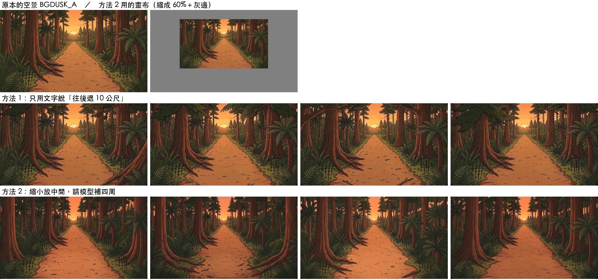
第二列：只用文字；第三列：圖庫生成補四周。
第二批四個點子
- 失敗 模型補好後把原圖貼回中間：四周跟貼回的原圖接不起來。
- 近景重複 編輯畫面只補灰邊：中間保住了，但新補的近景是原本的近景再畫一圈（鏡中鏡）；第 1 次還有接縫。
- 失敗 畫布＋原空景兩張一起給：還是整張重畫。
- 失敗 直接編輯空景叫它往後退：幾乎沒變。

編輯畫面補灰邊，指定補上新東西 成功（但等於原地換廣角）
整張縮成 60%（以消失點為中心）、四周塗灰、上傳，在編輯畫面請它只補灰色；prompt 點名外圍放倒木、大石頭、銀杏、水窪、被畫框切掉的細樹幹，寫「不要重複中間的排列」。程式 back10c.py。
3 次都成功、沒接縫，新近景跟原圖不一樣。問題：整張等比例縮，夕陽也變小——真的往後退，夕陽大小不會變。這其實是「鏡頭不動、換廣角」的效果。
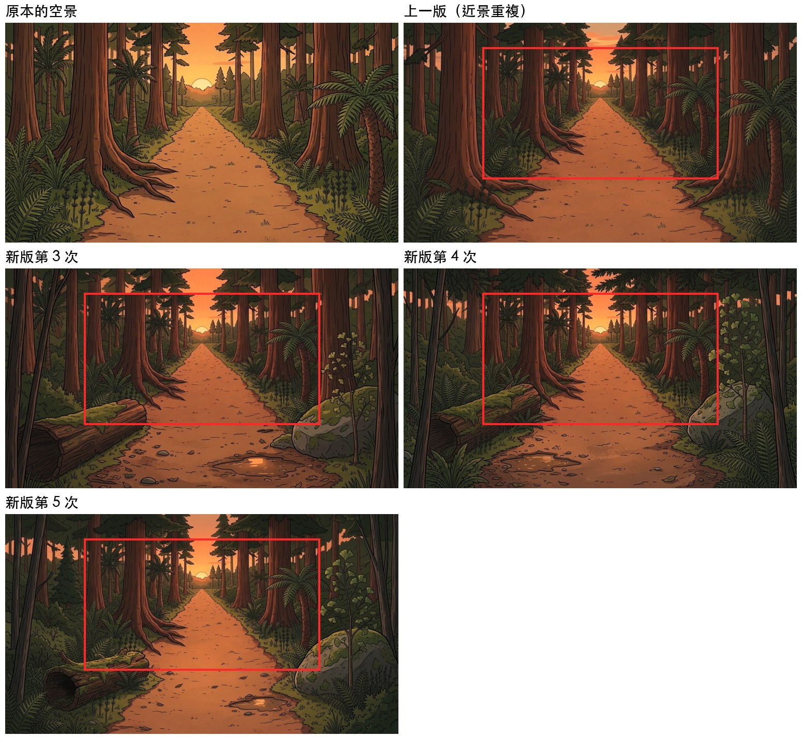
紅框＝原本的畫面。
照距離縮放：A 分兩層、B 照深度逐點縮 B 最好
Studio 用 Depth Anything 算深度圖（studio_depth.py），用量尺版的 HERO 腳底 10 m、TEEN 腳底 18 m、天空無限遠校正成公尺。A：60 m 外不縮、以內縮 60%。B：每一點縮成 z ÷ (z＋10)，近的蓋遠的，露出來的細紋清成灰色（dolly.py）。再用編輯畫面補（back10d.py）。
A、B 的夕陽都跟原圖一樣大。B 最像真的往後退：最近的那棵大樹縮得最多，遠方幾乎不動。B 的畫布 71% 是灰色，新補的範圍很大。4 次都成功。


由上到下：原空景、整張縮 60%、A 分兩層、B 逐點縮（左＝畫布，右兩張＝補好的結果）。
共通規則
- 轉方向、往後退、裁近，不能只靠文字講。要先在電腦上把畫面擺好（縮小、裁切），或用很具體的位置描述（連戲清單）。
- 編輯畫面很會保留原圖。拿掉角色、補灰邊都靠它。但一次只出 1 張、可能要試 2～3 次；編輯會變成原圖的新版本，只能編輯定案的圖或專門上傳的複本。
- 要知道角色該多大，畫面裡就要有尺——量尺版。
- 模型愛照抄。參考圖有什麼就畫什麼；要它畫新東西，就點名新東西是什麼。
- 從別處搬來的 prompt 句子要逐句對新鏡頭檢查（小路方向、影子方向都抓到過矛盾）。
- 參考圖先改成唯一的名字再搜尋（
EXP Sxx、BGxxx）。
程式都在 scripts/flowbot/；細節也記在 WORKFLOW.md 和 skill dino-flow-prompt 第八節。